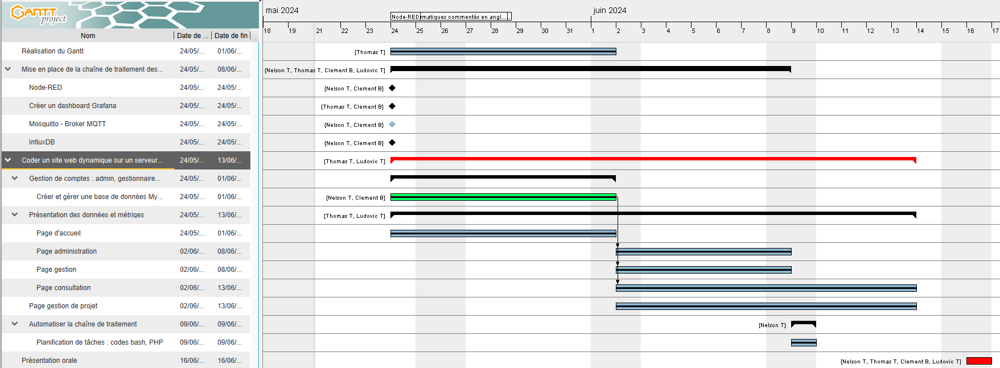
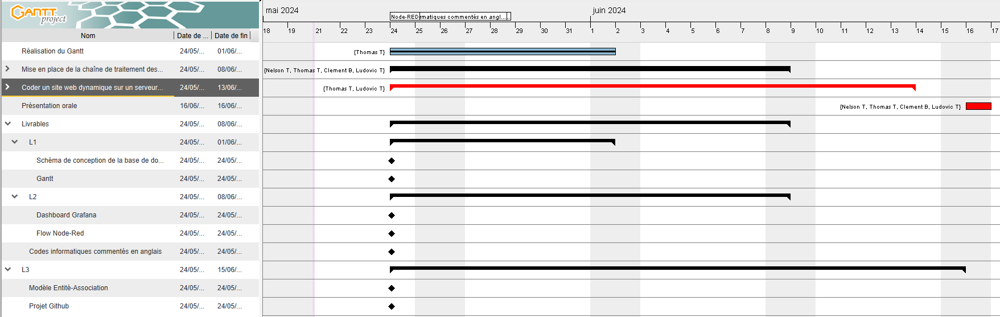
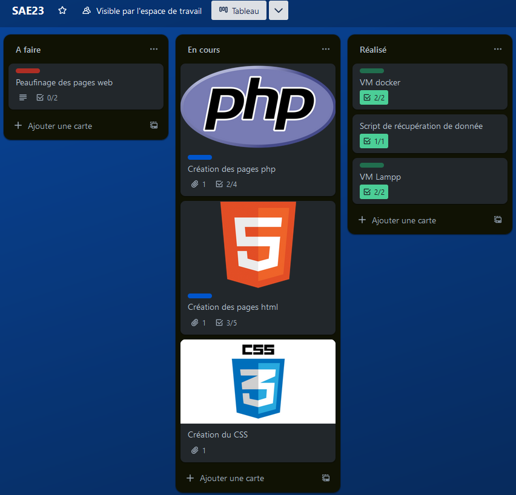
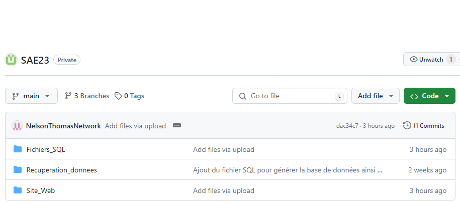

Dans cette section, vous pourrez découvrir les tâches que chacun d'entre nous a réalisées. Vous allez voir que sur certaines tâches, nous nous y sommes mis à plusieurs, comme par exemple les pages php/html ou encore le docker par exemple.
Au début de la SAE, je me suis occupé de la réalisation du Gantt qui nous a permis de nous organiser pour le reste du projet. Avec Nelson THOMAS, nous nous sommes attelés à la réalisation du conteneur Docker, du Grafana ainsi que du Flow NodeRed. Une fois, cela fait, avec l’aide de Ludovic TEIXEIRA, nous nous sommes occupés de la majeure partie des pages html/css/php. De mon côté, je me suis donc occupé de la majorité des formulaires nous permettant de naviguer entre les pages web. De plus, la réalisation de l’affichage des mesures de façon dynamique était mon rôle. Je me suis donc servi du script de récupération que nous avions fait pour afficher les données dans les pages qui nous étaient demandées. En plus de cela, il fallait afficher différentes métriques comme la moyenne, le minimum et le maximum de l’échantillon de données. Grâce à la base de données que nous avions réalisée au préalable, il nous était donc plus simple de calculer ces métriques grâce aux commandes AVG, MIN, MAX.
Lors de cette SAÉ, je me suis d’abord consacré à la réalisation de la partie sur docker. J’ai donc réalisé la mise en place des différents conteneurs afin d’implémenter le flow node red, la base InfluxDB ainsi que le dashboard grafana avec Thomas TRESGOTS. Concernant le serveur LAMPP, j’ai mis en place le script de récupération des mesures sur le broker mqtt dans un fichier bash. Je me suis par la suite concentré sur les scripts d’ajout/mise à jour des bâtiments, salles et capteurs tout comme la suppression avec mon camarade Clément BEUDOT. Finalement, je suis intervenu sur la plupart des scripts php réalisés afin d’optimiser le nombre de scripts avec l’ensemble de mes camarades.
En ce qui concerne ma partie, j'ai pris en charge la réalisation des pages web (HTML, CSS, PHP) avec l'aide de Thomas TRESGOTS. Plus précisément, nous avons créé l'ensemble des pages des différents formulaires (création, suppression, connexion, etc.), en veillant à les uniformiser avec le style du site. J'ai personnellement géré la partie sessions, en élaborant les scripts de gestion des sessions pour les différents types d'utilisateurs (administrateur, gestionnaire 1 et gestionnaire 2). J'ai porté une attention particulière à la gestion des accès, en veillant à ce que l'administrateur puisse accéder à toutes les pages, y compris celles des gestionnaires, tandis que les gestionnaires n'ont accès qu'à leurs propres pages respectives.
Pour ma part j’ai participé un peu partout au projet, j’ai commencé avec Ludovic avec la création des 2 VM, une pour docker et une pour Lampp. Une fois la création terminée, nous devions les configurer. Sur la VM Lampp, nous avons configuré le changement de http vers le https, la création des mots de passe pour la base phpMyadmin, daemon, etc. Une fois ces configurations réalisées, j’ai pu toucher avec Nelson au Flow Node Red avec la récupération des données depuis le broker MQTT (récupération des données). De plus, j’ai participé à la création des scripts pour ajouter et supprimer des bâtiments, salles et capteurs avec Nelson. Enfin, j’ai participé à la correction des autres pages « php et hmtl ».
Dans ce tableau, nous avons référencé tous les problèmes que nous avons rencontrés lors de la réalisation de cette SAE. Vous pourrez aussi voir les solutions que nous avons apportées pour palier à ces problèmes.
| Difficultés rencontré | Solution trouvé |
|---|---|
| Formulaires mal configurés | Nous devions Vérifier que chaque élément du formulaire a les attributs nécessaires (comme name et value). |
| Incohérences entre les attributs id et les labels for | Nous devions aussi nous assurer que chaque label est correctement lié à l'élément de formulaire correspondant en utilisant le même identifiant pour l'attribut id et for. |
| Problèmes avec PHP : Erreurs de syntaxe | En ce qui concerne le PHP, les problèmes étaient principalement liés à la compréhension. PHP étant un nouveau langage pour nous, nous avons parfois eu du mal à repérer les erreurs de syntaxe (comme l'oubli de ;) |
| Gestion des sessions | Pareil que précédemment, étant donné la nouveauté qu'est le PHP, la gestion des sessions était un peu complexe au début, mais grâce aux TP réalisés en cours, nous avons pu surmonter cela. |
| clés étrangères dans les scripts | Nous avons également rencontré des difficultés lors de la création des scripts pour l'ajout et la suppression de bâtiments, de salles et de capteurs, en raison de problèmes liés aux clés étrangères (foreign key). |
| Switch ne triant pas les chemins correctement avec Node-RED | Lors de la mise en place de Node-RED, nous avons eu des problèmes avec le switch qui ne parvenait pas à trier les chemins. Nous avons finalement découvert qu'il fallait changer le type de message entrant en mode ‘topic’ pour résoudre ce problème. |
| Mis à jour, le 13/06/2024 | |
Vous pouvez voir ici le diagramme de Gantt que nous avons réalisé pour ce projet. Un diagramme de Gantt est un outil utilisé en ordonnancement et en gestion de projet nous permettant de visualiser dans le temps les diverses tâches composant un projet. Le diagramme de Gantt présenté couvre la période du 24 mai 2024 au 16 juin 2024 et détaille les différentes tâches et échéances de la SAE. Ensuite, nous avons mis en place la chaîne de traitement des données, incluant des sous-tâches spécifiques telles que la configuration de Node-RED et la création d'un dashboard Grafana. Dans cette section, d'autres sous-tâches incluent l'installation de Mosquitto - Broker MQTT et InfluxDB. Ces tâches ont impliqué tous les membres du groupe. La tâche la plus fastidieuse est le codage d'un site web dynamique sur notre serveur LAMPP. Dans cette tâche, il fallait prendre en compte la gestion des comptes administratifs et gestionnaires, la création et gestion d'une base de données MySQL. De plus, la présentation des données et des métriques est également incluse dans cette tâche, avec des sections dédiées à la page d'accueil, la page d'administration, la page de gestion, la page de consultation, et la page de gestion de projet. Ces tâches ont duré le temps de toute la SAE.
 Voici le Trello que nous avons réalisé pour l'occasion. Tout comme le Gantt, il nous a permis de mieux nous organiser en ce qui concerne les tâches qui nous restaient à faire, celles que nous avions déjà fait et celles qui étaient en cours.
Vous pouvez voir l'organisation de notre projet sur GitHub. Comme vous pouvez le constater, notre projet se compose de trois répertoires : Fichiers SQl, Recuperation_donnees et Site_Web dans lesquelles se trouve les fichiers essentiels pour notre projet. Dans Site_Web, vous allez retrouver toutes les pages web de la SAE ainsi que les fichiers php, css, un répertoire pour les images, etc. Dans le fichier Recuperation_donnees se trouve notre fichier qui permet de récupérer puis de traiter les données qui nous sont envoyées par le broker. Enfin, dans le fichier SQL se trouve notre base de données pour le projet.
